Trouver des matchs à arbitrer, former ton corps arbitral, l'emmener sur tes rencontres et lire les notes des managers : voici comment faire, étape par étape, avec une capture d'écran à chaque geste.
Sur le terrain, tu as un sifflet en main, pas un téléphone. KoppaFoot te sert donc avant le match et après. Pendant, c'est ton scoreur qui tient la console et raconte la rencontre en direct.
Sur chaque capture, un cadre orange numéroté te montre où toucher. Suis les numéros dans l'ordre.
Dans le texte, le même numéro renvoie au même cadre : 1 2 3…
On accompagne Komi Adjovi, arbitre de niveau régional à Lomé. Il forme son corps arbitral, « Les Sifflets du Golfe », avec Yao Mensah, arbitre assistant, et Afi Lawson, scoreuse. Deux managers font appel à lui : Edem Amouzou, de l'Avenir d'Adakpamé, et Kokou Tepe, de l'Olympique de Tokoin.
Tous les noms (arbitres, scoreuse, managers, équipes) sont inventés pour l'exemple.
Voici comment créer ton compte d'arbitre et renseigner ta licence. Cinq minutes suffisent.
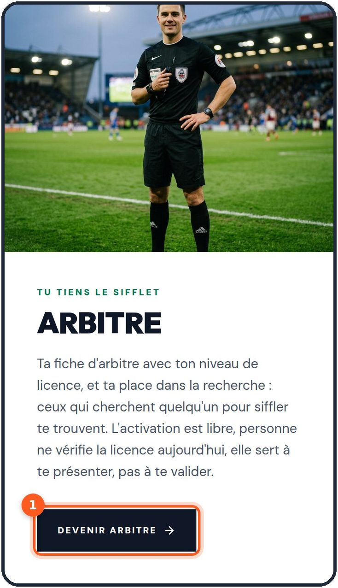
Va sur koppafoot.com/roles. Descends jusqu'aux trois rôles, et sur la carte Arbitre, touche 1 Devenir arbitre.
Remplis 1 ton prénom et ton nom, 2 ton email et 3 un mot de passe, puis touche 4 Continuer. Sur l'écran suivant, indique 1 ta ville et touche 2 Créer mon compte.
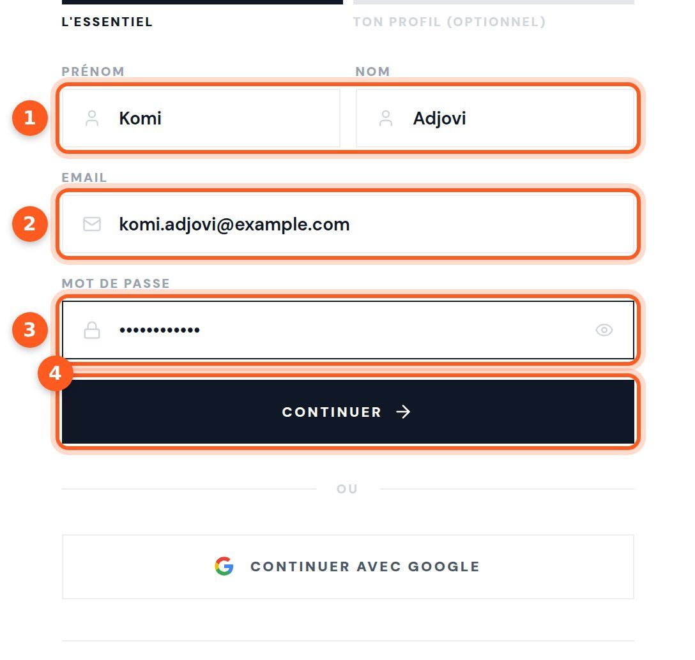
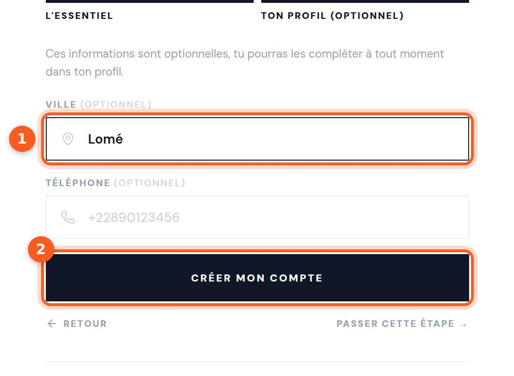
En haut de l'accueil, KoppaFoot te donne tes quatre premières étapes : compléter ton profil, renseigner ta licence, former ton corps arbitral, prendre ton premier match. Elles se cochent toutes seules, au fil de ce guide.
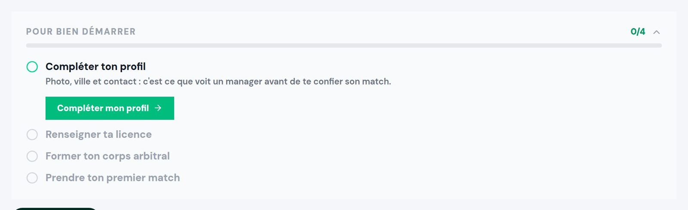
Touche ton avatar (tes initiales, en haut à droite), puis Mon profil. La carte Ma licence d'arbitre montre ce que les managers verront. Touche 1 Compléter.
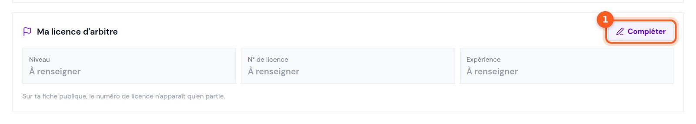
Indique 1 ton numéro de licence, 2 ton niveau (stagiaire, régional, national, international) et 3 tes années d'expérience, puis touche 4 Enregistrer.
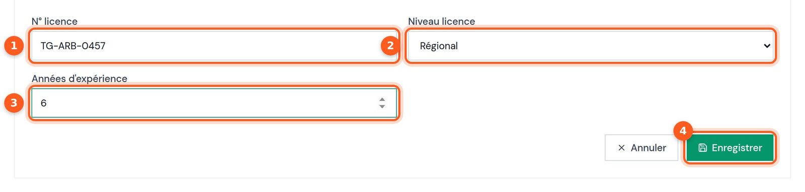
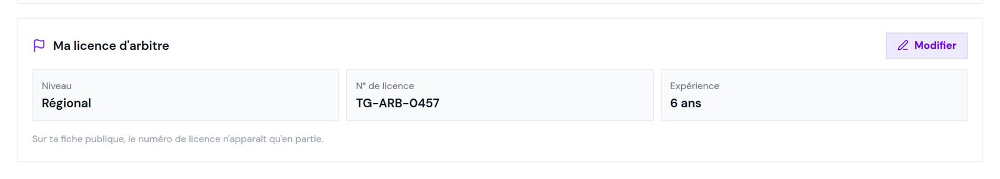
Ton corps arbitral, c'est ton équipe permanente : les arbitres qui t'assistent, et les scoreurs qui tiennent la console pendant que tu diriges. Tu le formes une fois ; ensuite, tu l'emmènes sur tes matchs.
Menu MySpace → Corps arbitral. Donne-lui 1 un nom, celui que les managers verront à côté du tien, puis touche 2 Créer mon corps arbitral.
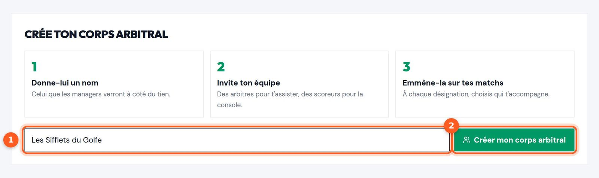
Ton corps arbitral est créé, avec toi comme arbitre principal. Deux boutons : 1 Inviter un arbitre pour tes assistants, 2 Inviter un scoreur pour la console.
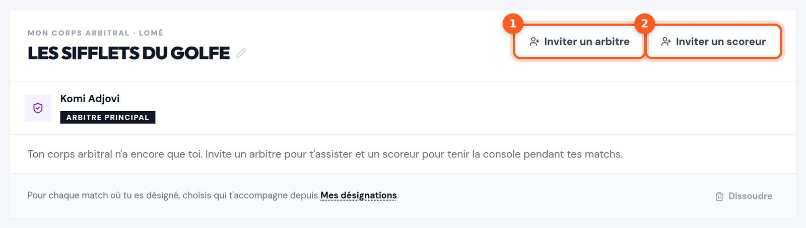
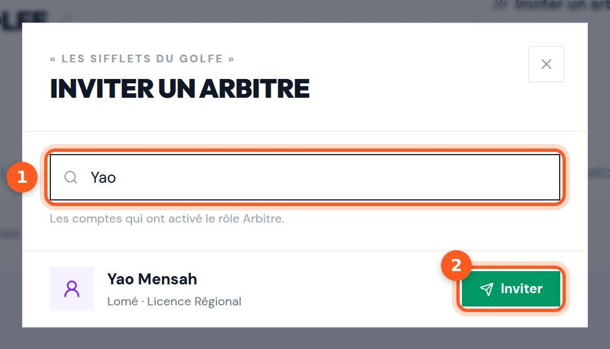
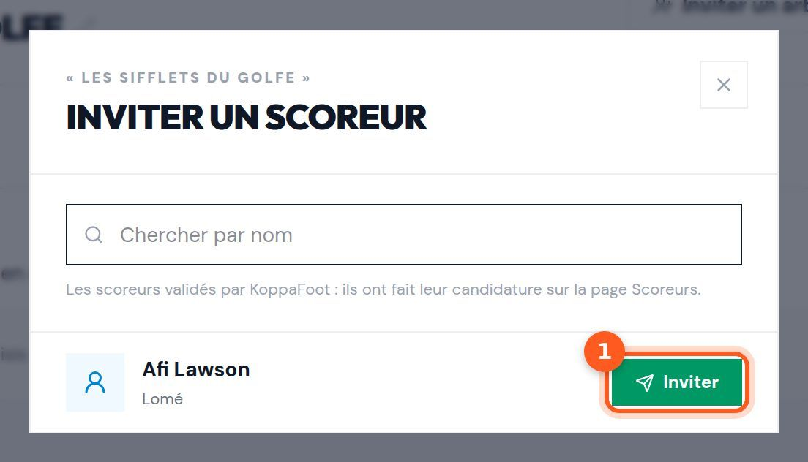
Tant qu'elles n'ont pas répondu, tes invitations restent 1 en attente. Tu peux en annuler une à tout moment.
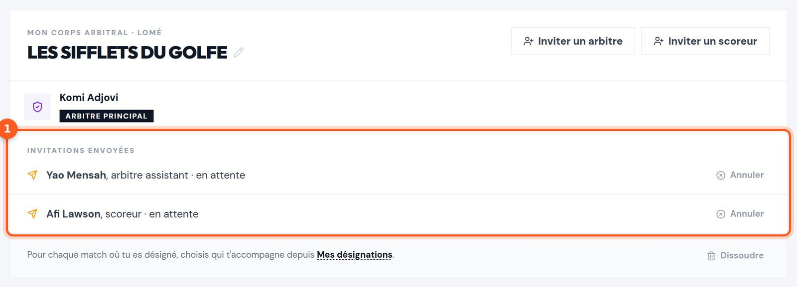
Yao reçoit une notification. Sur sa page Corps arbitral, l'invitation l'attend : il touche 1 Rejoindre, ou 2 Décliner. Tu es prévenu de sa réponse.
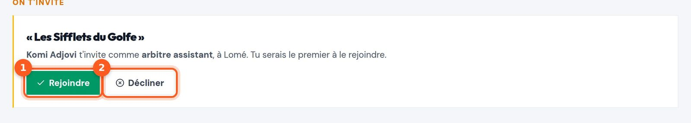
Yao et Afi ont accepté. Chacun porte son rôle : arbitre assistant ou scoreur. Tu peux retirer un membre, ou dissoudre le corps ; les personnes concernées sont prévenues.
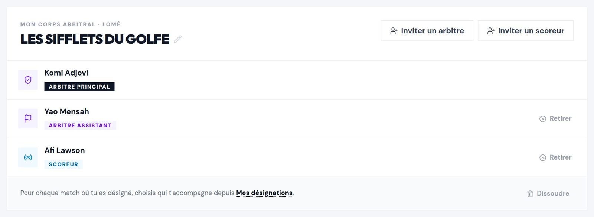
Des managers programment des matchs sans arbitre. Voici comment les trouver et te proposer.
Menu MySpace → Mes désignations. Trois onglets : Mes matchs, Trouver un match, Historique. Au début, rien ne t'attend : touche 1 Trouver un match à arbitrer.
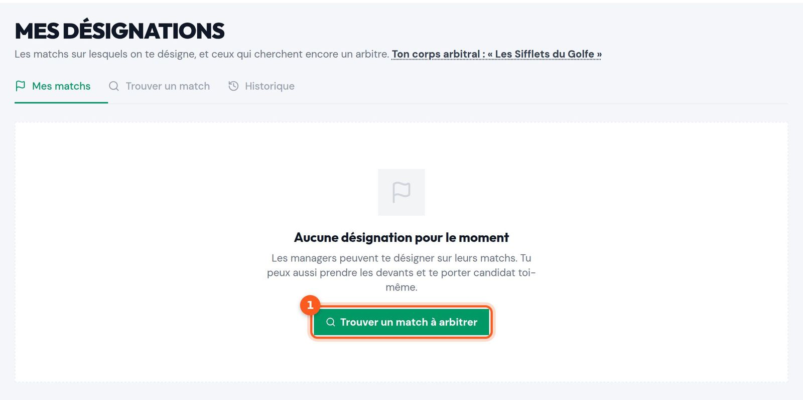
Les matchs qui cherchent un arbitre, du plus proche au plus lointain. Par défaut, ceux de 1 ta ville ; touche Partout pour voir les autres. Sur le match qui t'intéresse, touche 2 Me porter candidat.
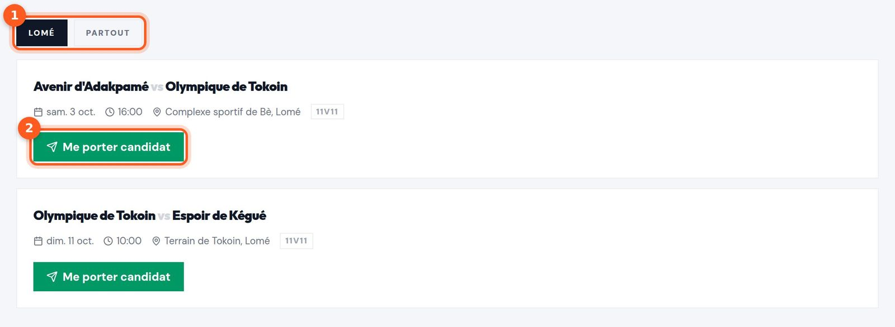
Ta candidature part au manager, qui est prévenu tout de suite. Dans Mes matchs, elle attend 1 sa réponse. Tu as changé d'avis ? Touche 2 Retirer ma candidature.
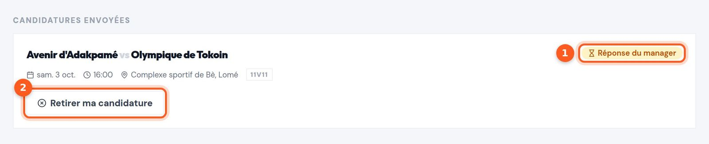
Sur la carte de son match, Edem voit « Un arbitre se propose ». 1 Ton nom mène à ta fiche : ta licence, ton expérience, tes notes. D'où l'intérêt d'une fiche complète. Il touche 2 Accepter l'arbitre ou 3 Refuser.
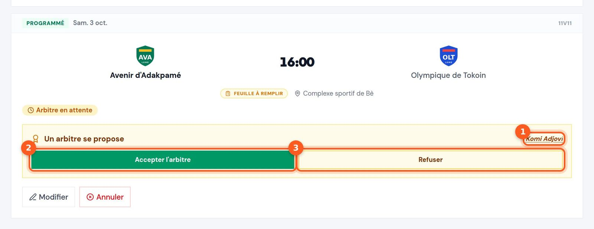
Edem a accepté : la cloche sonne, 1 « Tu arbitres ce match ». Le match passe dans tes désignations confirmées.
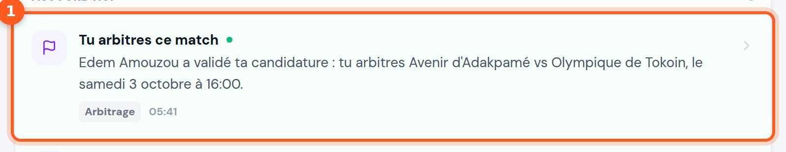
L'autre chemin : c'est le manager qui vient te chercher. Voici ce qu'il voit, et comment répondre.
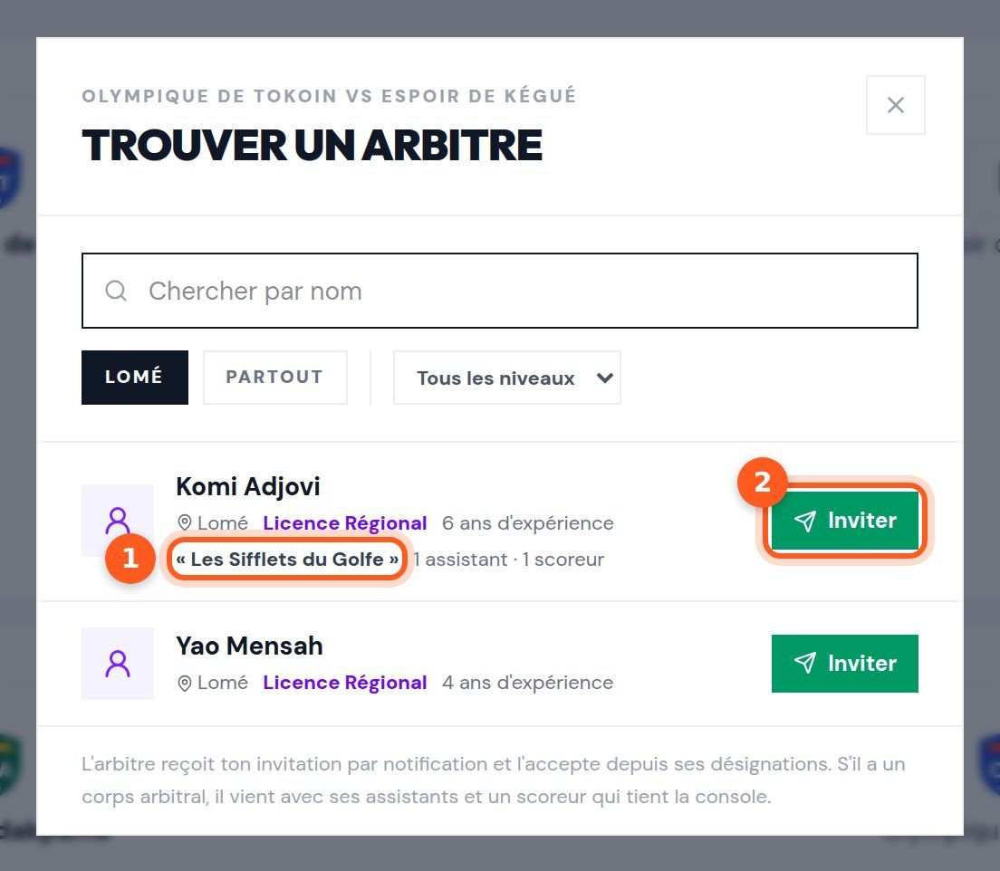
Kokou programme un match pour le dimanche. Sur sa carte, il touche Trouver un arbitre : les arbitres de la ville du match s'affichent, avec leur niveau et leur expérience.
Sous ton nom, 1 ton corps arbitral : Kokou sait que tu viens avec un assistant et un scoreur, donc qu'il n'aura pas à chercher quelqu'un pour la console. Il touche 2 Inviter.
La cloche sonne : 1 « On te propose un match », avec la date, l'heure et les équipes.
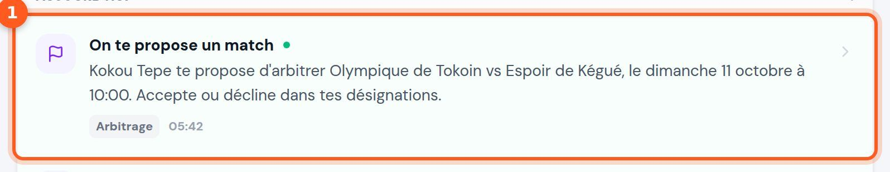
Dans Mes désignations, les invitations passent devant tout le reste. Touche 1 Accepter, ou 2 Décliner. Dans les deux cas, le manager est prévenu ; s'il a décliné, il invite quelqu'un d'autre.
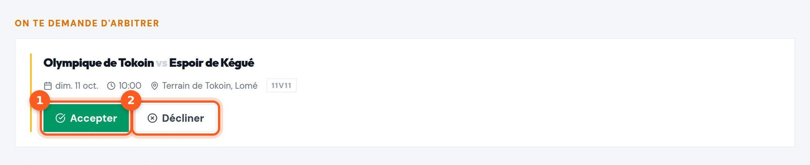
Tu es désigné. Pour chaque match, tu choisis qui t'accompagne dans ton corps arbitral : jusqu'à deux assistants, et un scoreur.
Sur la carte du match confirmé, le bloc 1 Ton équipe pour ce match te dit que tu viens seul. Touche 2 Composer mon équipe.
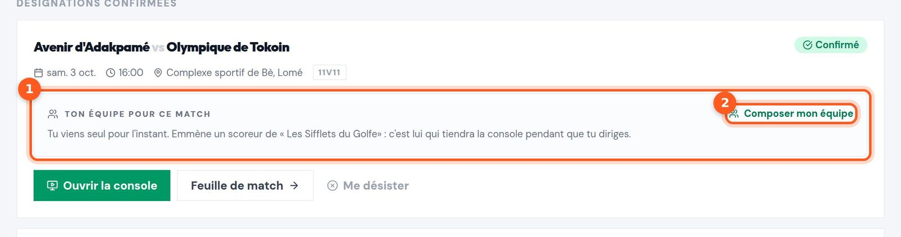
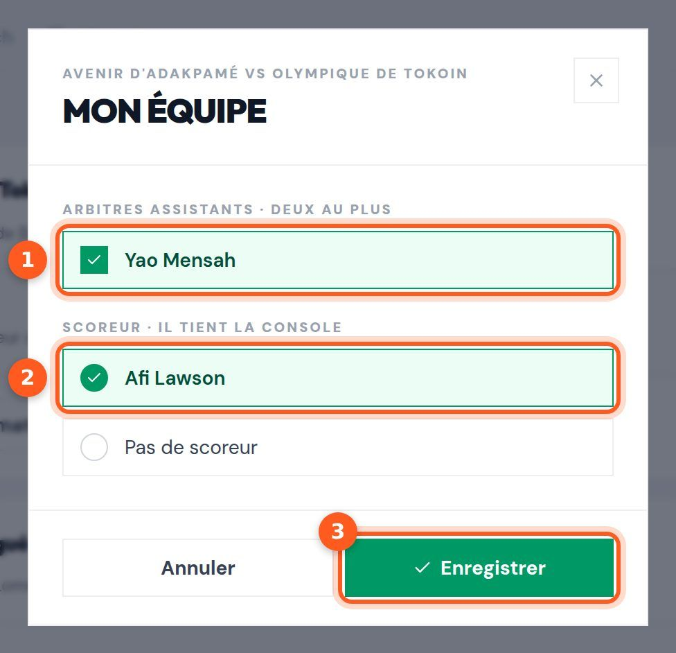
Chacun reçoit une notification : Yao qu'il t'assiste, Afi qu'elle tient la console.
La carte montre 1 ton équipe, et 2 qui tient la console pendant le match. Le bouton de la console devient 3 Console (en secours) : tu ne l'ouvres que si ton scoreur ne peut pas. Tu peux modifier l'équipe jusqu'au coup d'envoi.
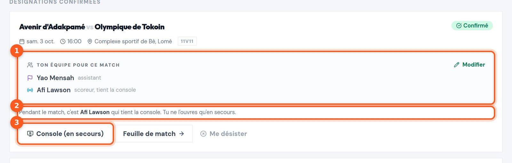
Afi retrouve le match dans Mes directs, son espace de scoreuse, avec 1 le nom de l'arbitre qu'elle accompagne. Yao le retrouve dans ses désignations, rubrique En renfort, 1 comme assistant.
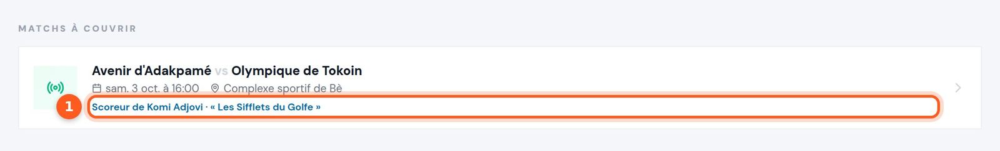
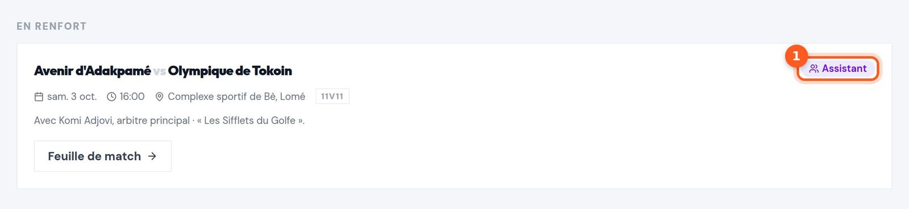
Tout le monde voit qui officie : dans l'onglet Infos de la fiche, 1 l'arbitre, l'assistant et le scoreur. Sur la carte de leur match, les managers le voient aussi.
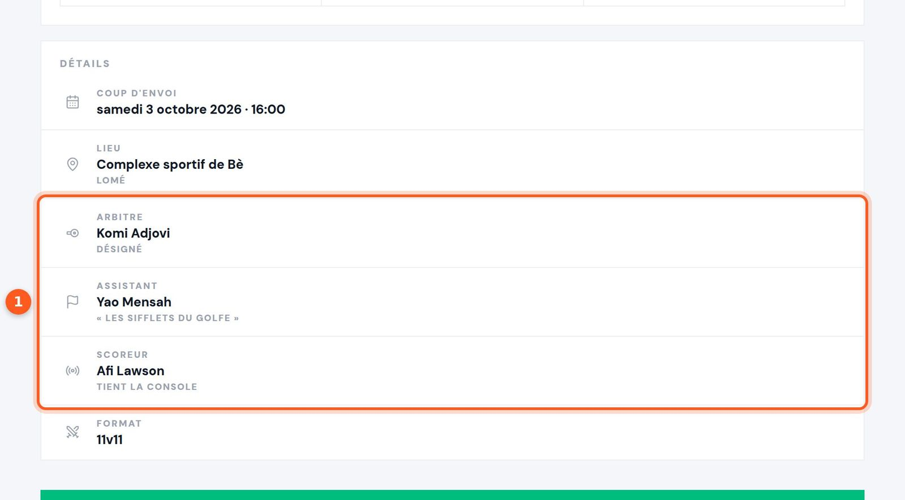
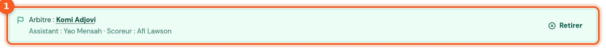
Avant le coup d'envoi, chaque manager valide la feuille de match de son équipe. Ensuite, tu diriges, et ton scoreur raconte le match.
Chaque manager valide la feuille de match de son équipe : ses titulaires, ses remplaçants. La console s'ouvre sur ces deux feuilles. Tant qu'elles ne sont pas validées toutes les deux, KoppaFoot l'écrit 1, et le bouton 2 Coup d'envoi reste grisé.
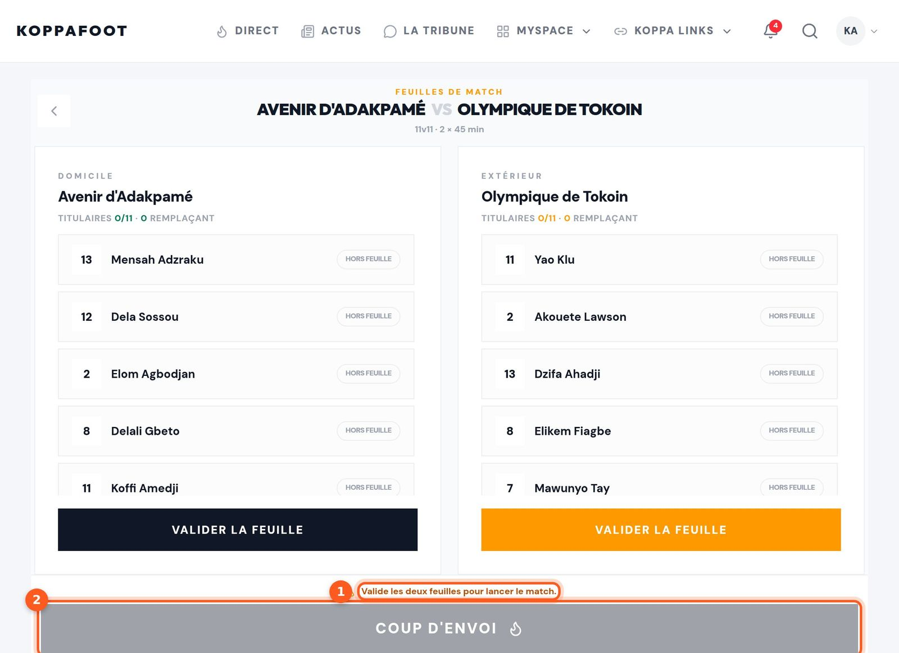
Un empêchement ? Sur la carte du match, touche 1 Me désister, puis confirme. Fais-le dès que tu le sais : c'est possible jusqu'au coup d'envoi.
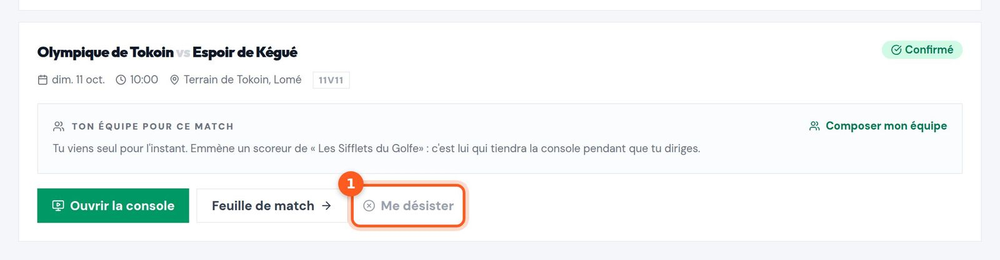
Les managers sont prévenus 1, et le match cherche de nouveau un arbitre. Ton équipe aussi est prévenue : elle venait pour toi.
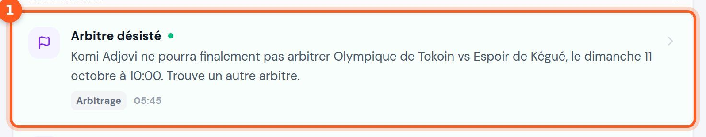
Afi a sifflé la fin dans la console : 2-1 pour l'Avenir d'Adakpamé. Place aux retours des managers.
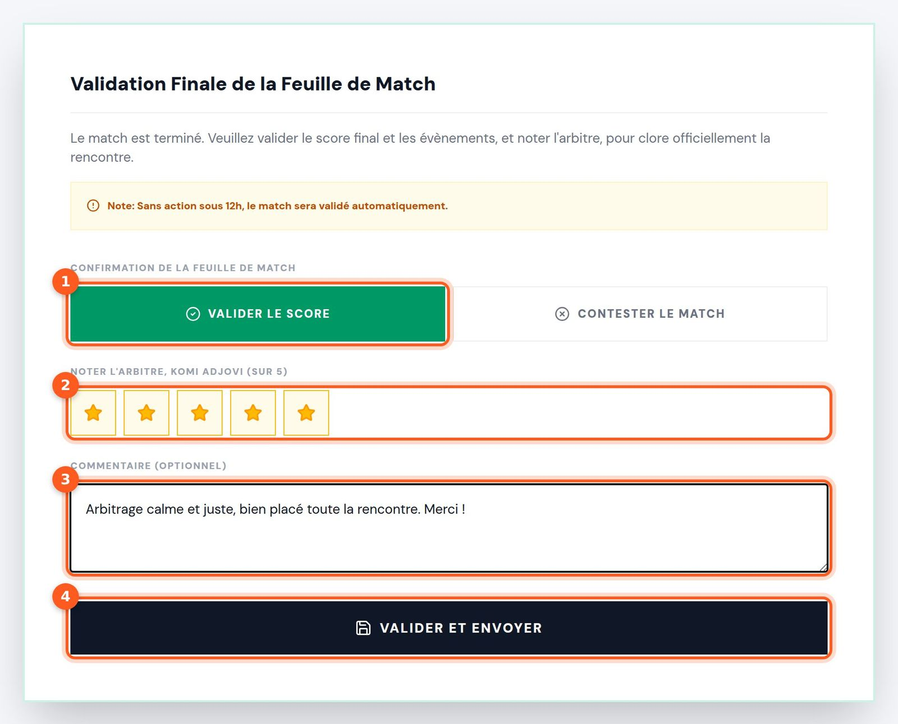
Sur la fiche du match terminé, chaque manager valide le score et note ton arbitrage. Voici ce que voit Edem :
Kokou fait de même de son côté. Tu reçois une note par équipe.
Chaque note sonne : 1 « Une note de 5/5 », « Une note de 4/5 », avec l'équipe qui l'a donnée.
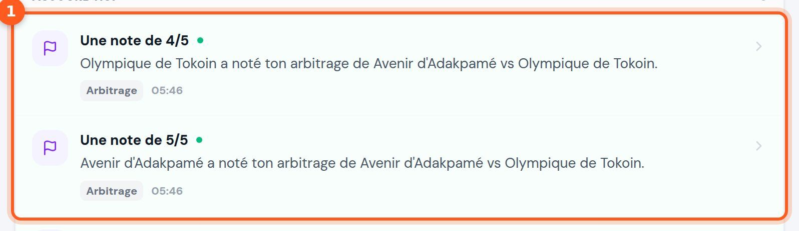
Mes désignations → Historique : 1 ton bilan (matchs dirigés, note moyenne, nombre d'avis), puis chaque match avec son score et 2 la note de chaque équipe.
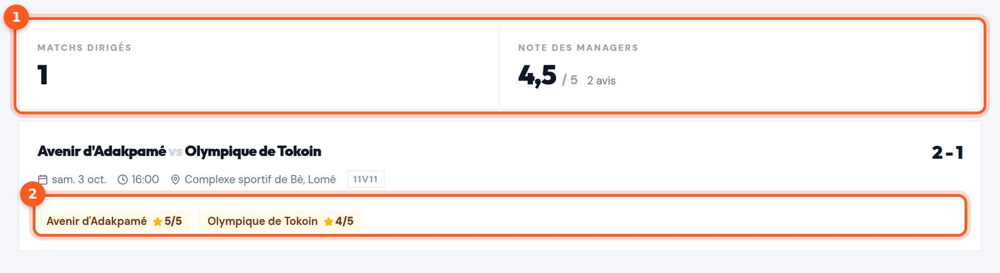
C'est ce que regarde un manager avant de t'inviter : 1 tes matchs arbitrés et ta note moyenne, 2 ton corps arbitral, ta licence et ton expérience. Le détail des notes et des commentaires reste pour toi.
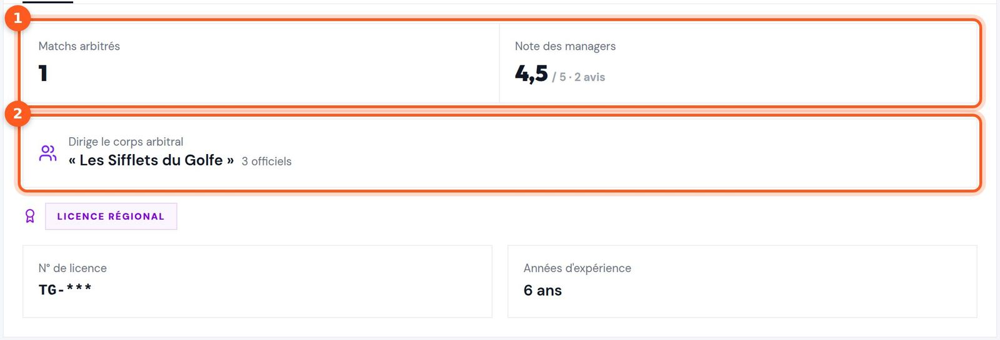
Tout se fait aussi sur téléphone : c'est là que tu répondras à la plupart des invitations.
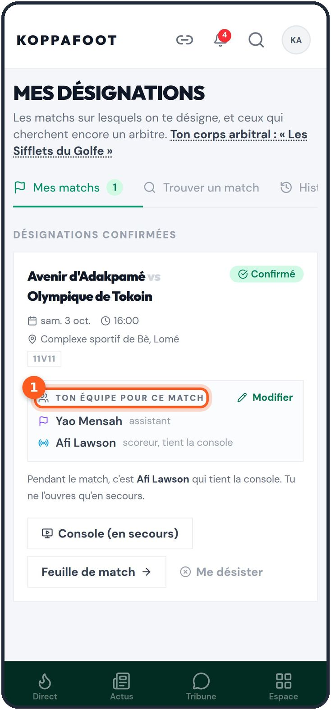
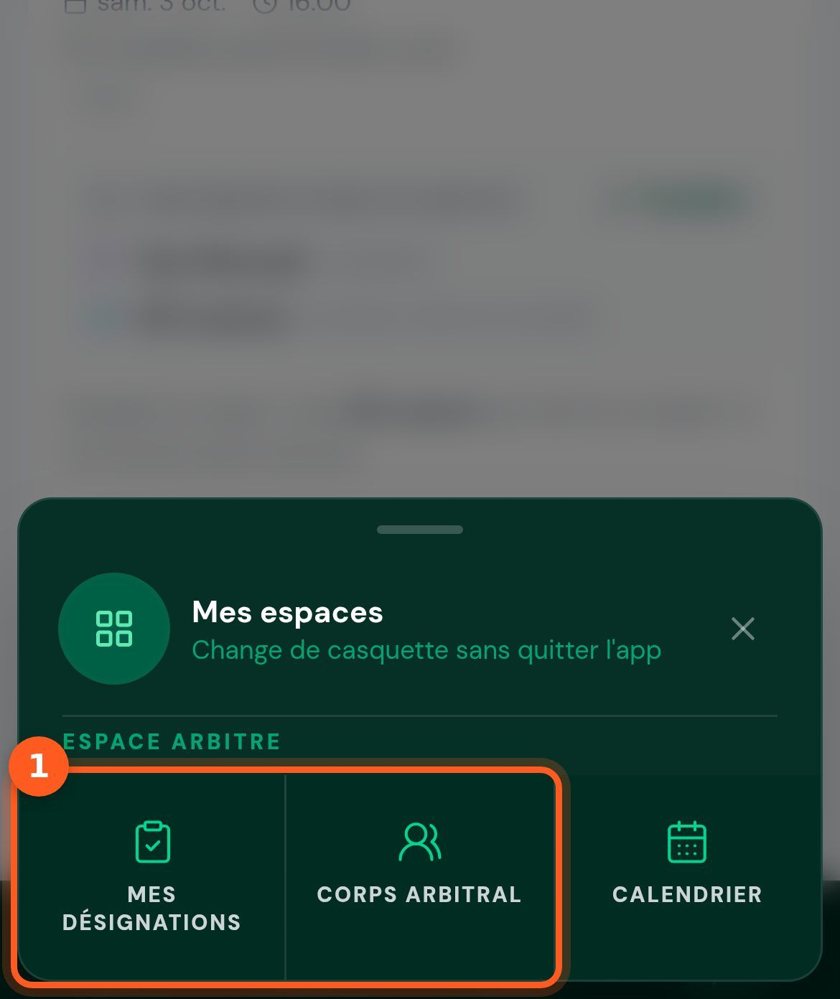
Les gestes à connaître, de l'invitation à la note.